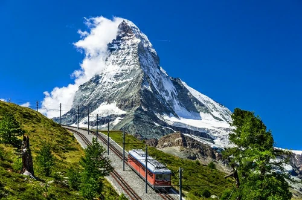

My trip to Switzerland
Posted on August 20, 2024
Last week, I had the wonderful opportunity to visit Switzerland. Here are some highlights:
Interlaken
A small town located in the district of Interlaken-Oberhasli on the shores of Lake Brienz to the east and Lake Thun to the west, it is simply one of the most beautiful areas in the country, and perhaps in all of Europe in terms of its natural scenery.
The area is located between two large lakes, and is surrounded by many mountain peaks and natural green spaces.
Matterhorn

A pyramid-shaped mountain peak with a height of 4,478 meters above sea level, located on the border between Italy and Switzerland.
This peak attracts large numbers of tourists and climbers, whether to climb the summit or to enjoy the enchanting natural view of the surroundings.
Tourists can also try winter sports such as skiing, and visit some of the small villages nearby such as Zermatt and Breuil-Cervinia.
It is recommended to avoid visiting the Matterhorn during peak seasons, not only because of the crowds, but also because of the high costs of accommodation, food and activities.
Jungfraujoch

A mountain pass in the Alps at 3,466 metres that passes through a number of sights, including an astronomical observatory that is considered one of the highest in the world (at 3,572 metres).
Another famous sight that the pass passes through is the Mönchlegg Hut, which is easily accessible via this pass despite its high altitude.
Lucerne
A tourist city located in central Switzerland on the banks of a lake of the same name, considered one of the most beautiful lakes in the world (Lake Lucerne), and also located on the banks of the Reuss River, which flows into the lake.
The city is free of cars and is full of pedestrian bridges and fountains, and its most famous landmark besides the lake is the Chapel Bridge, which dates back to the fourteenth century.